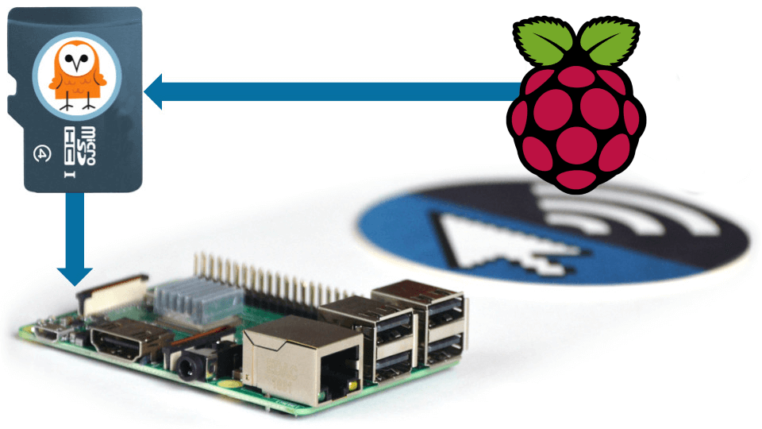
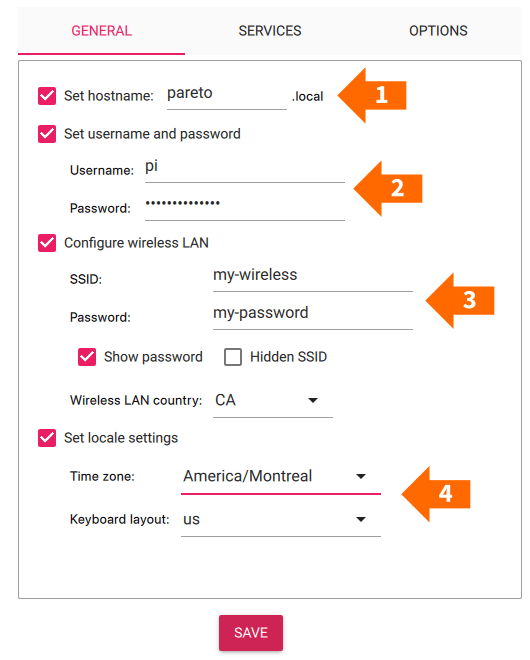
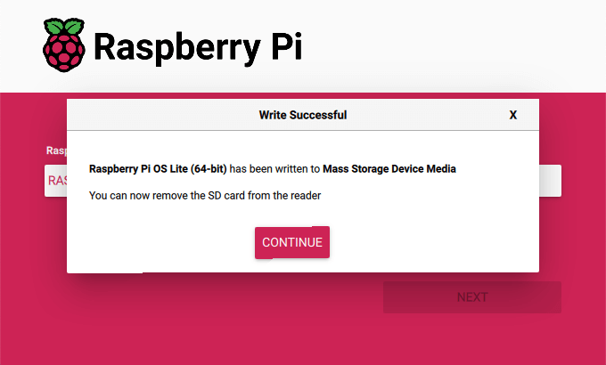
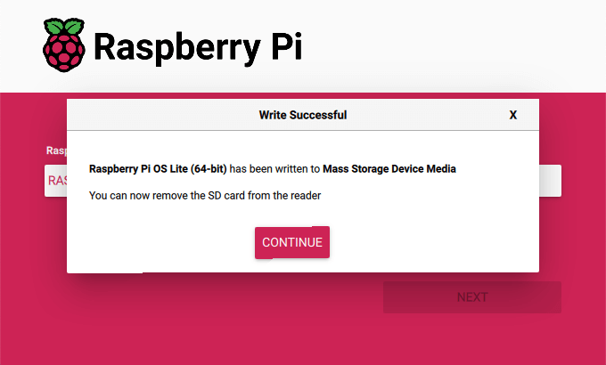

Flash an OS for use on a Raspberry Pi
Our step-by-step guide to prepare an SD card with a custom image or Raspberry Pi OS Lite.
The TL;DR (Too Long; Didn't Read)
Learn how we at reelyActive prepare a SD card image for a headless Pi.
- What will this accomplish?
- A clean, lean installation of the latest Raspberry Pi OS Lite build ready to install Node.js and other programs like our Pareto Anywhere middleware.
- What is a custom image?
- A custom image is a complete backup of an operating system with all of the software and settings, useful for replicating a Raspberry Pi.
- What is a headless system?
- A system without a monitor, keyboard, or mouse; typically accessed remotely over a network using SSH.
Flashing the OS to a SD Card Step 1 of 2
Use Raspberry Pi Imager to select a Raspberry Pi device, disk image, and apply important common settings.
- Why Raspberry Pi Imager?
- It is officially supported by the Raspberry Pi Foundation and works on various OSes, including Raspberry Pi OS itself. It manages all of the various images available for different devices, ensuring you'll be installing the best available option for your selected device.
- Why Pi OS Lite?
- It includes all the key ingredients for headless operation while keeping the disk image small.
- Why OS customisation?
- Unless you have a monitor and keyboard for the Raspberry Pi, good luck with the first connection otherwise!
Prerequisites
-
Raspberry Pi Imager
A friendly open source GUI tool that can be downloaded from here: Raspberry Pi Imager
-
SD Card
We recommend using micro SD cards from reputable vendors of at least 4GB size. A larger sized SD card may be required depending on the size of the custom image selected.
Flash the Raspberry Pi OS image to the SD card Part 1
On the computer you are using to flash the SD card:
- Insert the SD card (using an SD card reader if required) and check that it is recognised/mounted by the operating system.
- Launch Raspberry Pi Imager by double-clicking its executable or desktop icon.
-
Choose the Raspberry Pi Device:
1 Click the "Choose Device" button.
2 Select "Raspberry Pi 4" from the list of devices.
Choose the Operating System:
Follow these steps if you've downloaded a custom image to your computer from the reelyActive website or elsewhere.
3 Click the "Choose OS" button.
4 Scroll all the way down and select "Use custom".
5 Select the ".img" file on your computer that you want to flash onto the SD card.
Follow these steps if you want to install Raspberry Pi OS Lite.
3 Click the "Choose OS" button.
4 Scroll down and select "Raspberry Pi OS (other)".
5 Select "Raspberry Pi OS Lite (64-bit)" from the list of available OSes.
Choose the Storage Device:
6 Click the "Choose Storage" button.
7 Select the SD card from the list of available storage devices.
If you have connected a compute module, it will also appear here.
Pre-configuring the OS Part 2
Configure Raspberry Pi OS before first boot with Raspberry Pi Imager, ensuring a painless initial connection.
After selecting the Raspberry Pi Device, the Operating System, and Storage, when selecting "Next", a dialogue will ask if you'd like to customise the Raspberryp Pi OS settings.
Be sure to select "Edit Settings"; selecting "Yes" will apply the settings previously used and you may have to start over!
Set customisation options
From the General tab:
1 Set hostname: For example, you can set it to `pareto`. This is how the Raspberry Pi will appear on the network.
2 Set username and password: For example, you can use `pi` for the username and `berryinsecure` for the password. This will be the username and password used when logging in to the Raspberry Pi via the terminal or SSH.
As of April 2022, Raspberry Pi OS no longer ships with a default username & password!
3 Configure wireless LAN: Set the SSID and password for the WiFi network to which the Raspberry Pi will connect.
Choose the country code for your region.4 Set locale settings: (OPTIONAL) Select the Time zone and Keyboard layout. It is not required at this step and can be set later if desired.
From the Services tab:
5 Enable SSH: Select "Enable SSH" and select the "Use password authentication" radio button. This will allow you to login to the Pi via SSH using the username and password you earlier.
6 Click "Save" to save and apply these settings.

Flash the SD card Part 3
Completely erase the SD card and flash the selected image to the SD card.
 
After applying the OS customisations and clicking "Save", the Raspberry Pi Imager is ready to write the selected image to the SD card, completely overwriting any data on the SD card.
Click "Yes" to start the writing process.
After writing and verifying the process, you may safely remove the SD card from the computer.
First boot Step 2 of 2
Boot the Pi for the first time and connect via SSH over WiFi.
- Why connect over WiFi?
- The Raspberry Pi Imager makes it easy to configure the WiFi settings, so why not? It is also possible to connect the Raspberry Pi to the network with an ethernet cable.
- Why use SSH?
- Unless you have a display and keyboard connected to the Pi, the most common way to remotely connect and execute commands is over SSH!
The SD card should only be inserted into (or removed from) the Pi when it is disconnected from power.
Boot the Pi and connect via SSH over WiFi
Complete the following to boot the Raspberry Pi:
- Insert the SD card into the Raspberry Pi.
- Plug in the Raspberry Pi so that it turns on.
-
Open a terminal on your laptop and SSH into the Pi with the command: ssh pi:berryinsecure@pareto.local
pi and berryinsecure are the username and password entered when customizing the Raspberry Pi. If you change them, use the values you set. pareto is the hostname you set for the Raspberry Pi.
pareto is the hostname you set for the Raspberry Pi.
In some cases the Raspberry Pi may not be accessible via the hostname. In this case, you can find the IP address of the Raspberry Pi by scanning the local network.
 Angry IP Scanner is an open source GUI based tool that runs on Windows, Mac OS, and Linux. It can scan the local network and show what devices are connected, along with the hostnames and IP addresses for those devices. Angry IP Scanner can be downloaded here: https://angryip.org/download/
Angry IP Scanner is an open source GUI based tool that runs on Windows, Mac OS, and Linux. It can scan the local network and show what devices are connected, along with the hostnames and IP addresses for those devices. Angry IP Scanner can be downloaded here: https://angryip.org/download/Having multiple Raspberry Pi devices on the network can make it difficult to determine which IP address belongs to which device, and can cause difficulty when connecting to it using the hostname. Ensure that the hostname is unique for each Raspberry Pi device.
Now that you're logged in to the Raspberry Pi, it is possible to execute commands such as raspi-config.
Conclusion
You've successfully flashed a Raspberry Pi OS image to a SD card, pre-configured it for headless operation, and connected to it over WiFi via SSH.

Tutorial prepared with ♥ by James Eberhardt.
You can reelyActive's open source efforts directly by contributing code & docs, collectively by sharing across your network, and commercially through our packages.
Where to next?
Continue exploring our open architecture and all its applications.
-

-
Configure a Raspberry Pi as a kiosk display
Our step-by-step guide to configure a Pi as a kiosk display that runs automatically on boot.
-

-
reelyActive Developers
Browse all developer documentation and tutorials.
-

-
reelyActive
Let's put things in context, one space at a time.